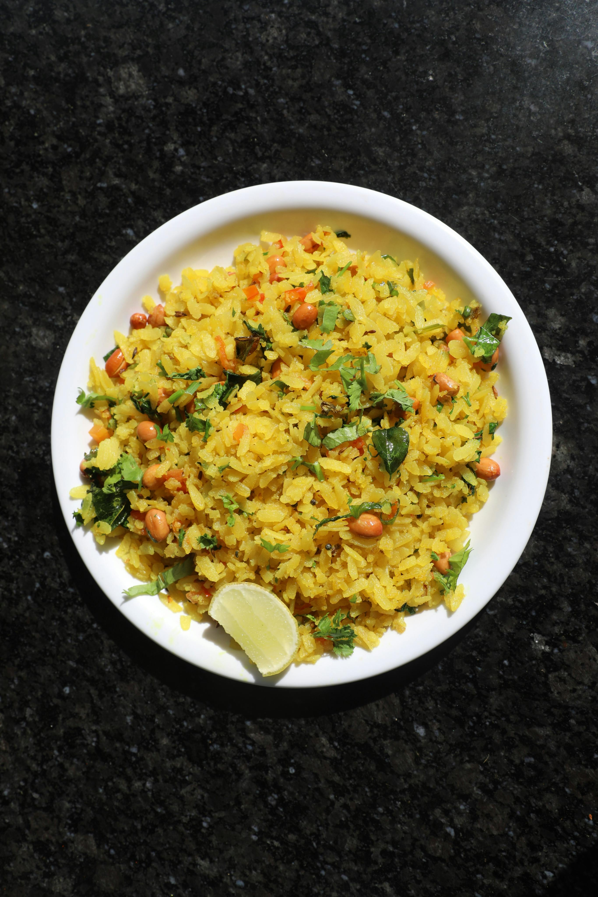

Poha is a popular Indian breakfast and snack made from flattened rice flakes. It is prepared by tempering the flakes with mustard seeds, turmeric, onions, green chilies, and curry leaves, often garnished with peanuts, fresh cilantro, a squeeze of lemon, and crunchy sev. The term "poha" refers both to the finished meal and the raw flattened rice (also known as beaten rice). The rice grains are parboiled, rolled, and flattened into light, dry flakes. They come in various thicknesses, but the medium-thick variety is ideal for cooking savory dishes as it absorbs moisture without turning into mush.
Place the poha in a fine-mesh strainer or colander. Rinse it gently under running water for about 30 seconds until the flakes soften, then immediately drain all the excess water. Do not soak it, or it will become mushy. Add salt, sugar, and turmeric powder to the drained poha, mix lightly, and set aside for 10 minutes to allow it to absorb and fluff up.
Heat 2 tablespoons of oil in a pan over medium heat. Add the peanuts and roast until they turn golden brown and crunchy. Remove the peanuts with a slotted spoon and set them aside on a plate.
In the same remaining oil, add the mustard seeds and let them splutter. Then, add the cumin seeds and a pinch of asafoetida (hing), allowing them to sizzle for a few seconds.
Add the green chilies, curry leaves, and finely chopped onions to the pan. Sauté on medium-low heat until the onions become translucent (light pink/soft). Optional: Add \(\frac{1}{2}\) cup of diced, boiled potatoes or fresh peas here if you want an Aloo-Kanda Poha.
Lower the flame and add the seasoned, prepped poha to the pan along with the fried peanuts. Toss and mix gently to coat all the poha evenly without mashing the flakes. Cover the pan with a lid and let it steam on low heat for about 3 to 5 minutes until it is hot throughout
Turn off the heat. Drizzle fresh lemon juice over the poha and garnish with chopped fresh coriander leaves. Mix once more and serve hot!